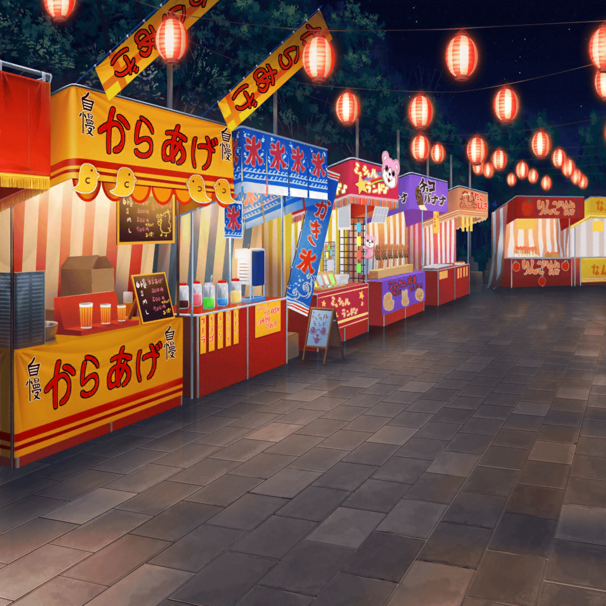

縁日
沙綾
ねぇ、有咲～！
どこにいるの～？ 有咲～！
たえ
……有咲、どこにもいないね
沙綾
弱ったなあ。
電話もまだ通じないし……おたえも？
たえ
私のもダメ
沙綾
さっきすれ違った人達も話してたけど、
やっぱり人が多すぎて、携帯が通じにくくなってるみたい……
たえ
連絡取れないと……困るね
沙綾
けど、おたえと手をつないでおいて、よかったよ……
そうじゃなかったら、私達もはぐれちゃってたかもね
たえ
だから有咲にも言ったのに……
沙綾
どうしよっか？
香澄とりみりんとはぐれた場所に戻ってみた方がいいかな？
たえ
……あれからちょっと時間たったから、
あそこにはもういないかも
沙綾
それもそっか。
う～ん、どうしよう……
沙綾
こんなことになるなら、有咲が言ってた場所のこと、
ちゃんと聞いておけばよかったなぁ。
そこに行けば、有咲はいそうな気がするし
沙綾
……あ、そういえば！
この間、香澄が読んでた雑誌！
あれに載ってたりしないかな？
たえ
載ってないと思う。
有咲はたぶん、雑誌に載るような場所はおすすめしなそう
沙綾
……たしかに。
自分で『秘密の場所』って言ってたもんね
たえ
その『秘密の場所』を、有咲の性格から考えてみる？
……探偵になったみたいで楽しそう
沙綾
有咲の性格から考えて、か。
えっと、それなら行きそうな場所は……
やっぱり人が少ないところかな？
たえ
うん、私もそんな気がする
たえ
それに有咲が『秘密の場所』って言うぐらいだから
誰もが思いつくような場所でもない気がする
たえ
有咲って、ちょっとひねくれてるところがあるから
沙綾
ま、まあ、たしかにちょっと複雑なところはあるね
沙綾
そうなると、やっぱり私でも思いつく
『花火がよく見える高台』ではなさそう……
たえ
うん。あそこ、普段から散歩する人多いしね
たえ
あと、有咲っていえば、インドア……引きこもりだから……
沙綾
（なんで言い直したんだろ……）
たえ
それと、暗い場所が好き。
有咲の家の『蔵みたいに暗くて静かな場所』が
たえ
…………
たえ
……有咲ってひょっとして……妖怪なの？
沙綾
ぷっ……ふふふっ……！
妖怪……って、ちょっと言いすぎだよ～
沙綾
それにしても、
『蔵みたいに暗くて、静かな場所』、か
そんなところ、この近くに……
沙綾
……あ！
そういえば、このあたりに神社ってなかったっけ？
たえ
妖怪、だから？
沙綾
そうじゃなくって！
たしか、あったよね？
林の中にあるから、普段は誰も足を運ばない神社が
たえ
うん、ある。
『花火がよく見える高台』の途中で、
右に折れて林の中に入ったところに
沙綾
そうだよね！
もしかしたらそこかもしれない、有咲の『秘密の場所』って！
沙綾
あそこって、木に囲まれてるから、
まさに『蔵みたいに暗くて、静かな場所』だし
たえ
うん、妖怪も出そうだし、間違いないかも。
さすが、名探偵・沙綾
沙綾
あはは、ありがとう。
それじゃあ、早速、その神社に行ってみようよ
たえ
わかった。
なら……ん、手
たえ
つないで行こ？
はぐれないように
沙綾
うん！
そうしよう！